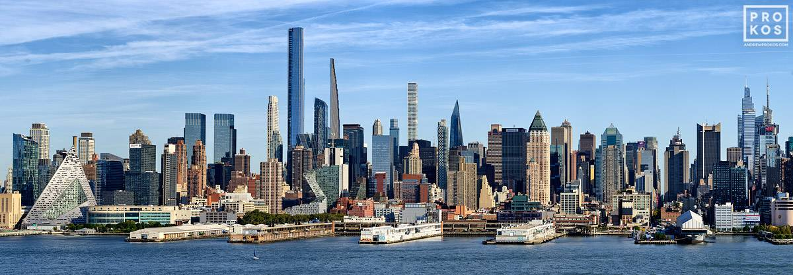

| Image |
Page Location |
Source |
|
Home Page |
Pods, England, A., & Gabriel, L. (2020, October 09). NYC moving Guide: The New York CITY Boroughs, Explained. Retrieved March 08, 2021, from https://www.pods.com/blog/2019/03/nyc-moving-guide-the-new-york-city-boroughs-explained/ |
 |
Origins |
Dailey, J. (2013, May 06). When wall Street was a Wall: A 1660 map of Manhattan. Retrieved March 08, 2021, from https://ny.curbed.com/2013/5/6/10246784/when-wall-street-was-a-wall-a-1660-map-of-manhattan |
 |
Origins |
Aerial of flushing - METROSCENES.COM - New York CITY AERIALS - August 2012 - city skyline and Urban photography by Matt Robinson - City photos and prints for sale. (n.d.). Retrieved March 08, 2021, from https://images.metroscenes.com/2012/new-york-city-aerial-august-2012/1740/aerial_of_flushing/ |
 |
Origins |
Gandel, S. (2015, October 20). What the $5 billion Stuyvesant Town deal says about the real estate market. Retrieved March 08, 2021, from https://fortune.com/2015/10/20/what-the-5-billion-stuyvesant-town-deal-says-about-the-real-estate-market/ |
 |
Parts of the City |
Times Square, New York City – visitor information. (n.d.). Retrieved March 08, 2021, from https://www.nycgo.com/attractions/times-square |
|
Parts of the City |
Plambeck, J. (2011, November 24). Tucked away and neatly tricked out. Retrieved March 08, 2021, from https://www.nytimes.com/2011/11/27/realestate/glendale-queens-living-in-tucked-away-and-neatly-tricked-out.html |
|
Parts of the City |
Roleke, J. (n.d.). Is Queens a suburb of New York or part of the city? Retrieved March 08, 2021, from https://www.tripsavvy.com/is-queens-a-suburb-2819354 |
|
Immigration |
Phase 1 at United Nations Headquarters: A staff MEMBER'S WALKTHROUGH. (n.d.). Retrieved March 08, 2021, from https://www.un.org/en/coronavirus/phase-1-un-headquarters-staff-member%E2%80%99s-walkthrough |
|  |
skyscrapers |
New York city skylines. (n.d.). Retrieved March 08, 2021, from https://andrewprokos.com/photos/new-york/skylines/ |
 |
Manhattan expansion |
Downtown Brooklyn Rising: First look at What Redsky capital is planning on Fulton Street. (n.d.). Retrieved March 08, 2021, from https://www.cityrealty.com/nyc/market-insight/features/future-nyc/downtown-brooklyn-rising-first-look-what-redsky-capital-planning-fulton-street/12303 |
 |
Food |
Asian fusion restaurant. (n.d.). Retrieved March 08, 2021, from https://sagarchinese.com/ |
 |
Food |
Fu fan RESTAURANT. (n.d.). Retrieved March 08, 2021, from https://restaurants-cafes.com/New_York/Elmhurst/Fu_Fan_Restaurant |
 |
Tourist Spots |
Rosenberg, A. (2019, November 06). NYC's bucket list walk. Retrieved March 08, 2021, from https://www.nycgo.com/articles/guide-to-the-brooklyn-bridge |
 |
Tourist Spots |
16.LIC-Skyline,-2018. (n.d.). Retrieved March 08, 2021, from https://urbanomnibus.net/2019/01/sights-set-long-island-city/16-lic-skyline-2018/?printpage=true |